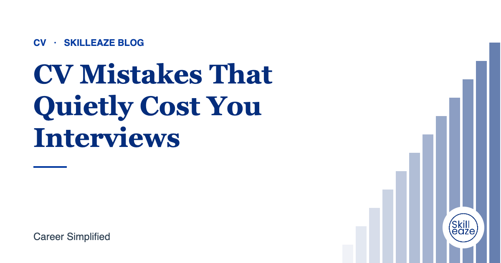

CV Mistakes That Quietly Cost You Interviews
Common problems that make recruiters move on, and how to fix them.

One CV for every job
Generic CVs rarely match specific roles. Tailor your profile and top skills for each application.
Hard-to-read formatting
Dense paragraphs, tiny fonts and complex designs make recruiters skim past important details.
Our team writes your ATS CV from your real experience. INR 490 · AED 20 · USD 6 (50% off).
Missing basics
Wrong phone numbers, unprofessional email addresses and missing locations are surprisingly common.
Unexplained gaps
Briefly explain longer gaps: study, family, relocation or freelance work.
Typos and inconsistencies
Mismatched dates between CV and LinkedIn raise doubts. Proofread everything.
Frequently asked questions
How long should my CV be?
One page suits most freshers, and two pages suits most experienced professionals. Senior or academic CVs can be longer. What matters is that every line supports the role you are applying for and the most relevant information comes first.
How do I explain a gap on my CV?
Add a short, honest line such as career break for family, relocation, study or health, and mention any courses or projects from that time. A brief explanation is better than leaving recruiters to guess.
Should I include references on my CV?
You do not need to list references or write references available on request. Employers will ask when they need them. Use that space for skills or achievements instead, and prepare your referees separately.
General guidance only. Employer requirements vary; always follow the job advert.
 Chat on WhatsApp
Chat on WhatsApp